Jobs
Jobs are a component of Perforce's defect tracking system and a record of bugs found or improvement requests. Jobs can be associated with changelists to create fix records, indicating the work that solved the problem or provided the requested feature. Begin browsing jobs by clicking the link in the main toolbar.
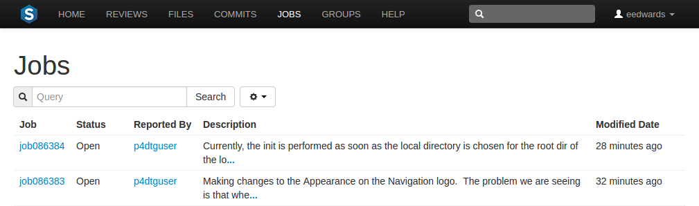
You can search available jobs by entering a job filter in the search
box. Words, phrases, and
field=valuereportedby=slord
swarm displays jobs that the user slord has
reported that also contain the word swarm in its
description.
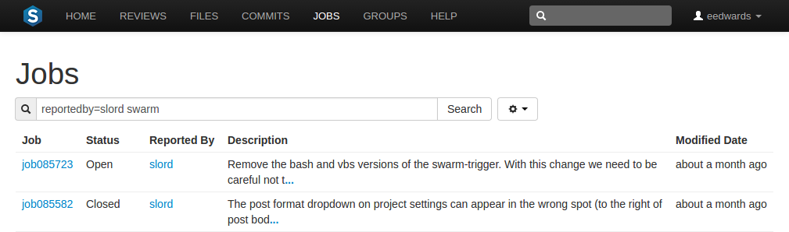
The fields you can search for depend on the jobspec defined in your Helix Versioning Engine.
Adjusting Jobs columns
You can configure the columns that are displayed:
-
Click the button beside the search field to display a tooltip menu showing all of the available jobspec fields.
-
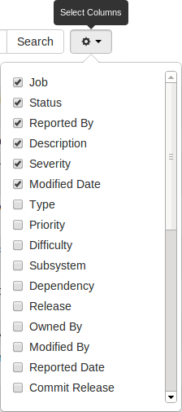
While the tooltip menu is displayed, check or uncheck the columns to configure which columns to display.
-
Click the button again, or a blank portion of the page, to hide the tooltip.
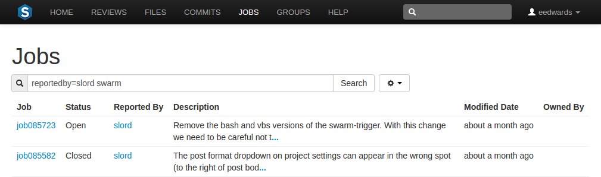
You can also adjust the order of the columns, in one of two ways:
-
With the tooltip menu displayed, click and drag column labels up or down to adjust their position.
-
When the tooltip menu is not displayed, click a column heading and drag it to the left or right to move the column to a new position.
The column display updates as columns are rearranged:
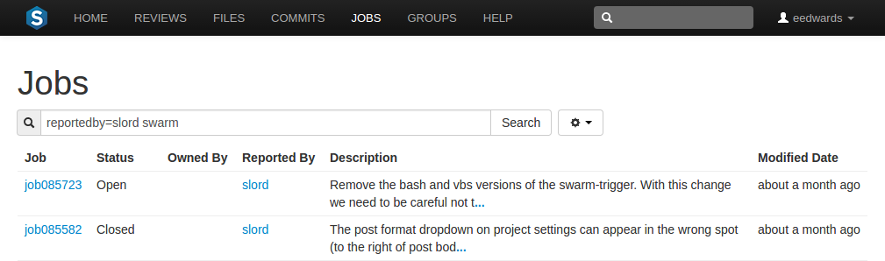
Tip
For more information on customizing jobspecs, see: Perforce System Administrator's Guide: Job Specifications
Job display
Jobs are typically identified with the word job followed by six
digits, e.g. job000123.
View a specific job by clicking on a linked job identifier, or by visiting the URL:
https://myswarm.url/jobs/jobid
When Swarm displays a job, the presentation is similar to:
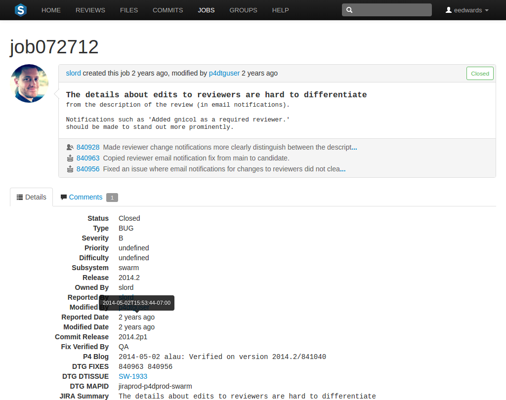
The upper portion of the job presentation includes:
-
The avatar and userid of the user that created the job
-
The job's creation time
-
If changes have been made to the job, the modifying userid and time
-
A status indicator
-
The job's description
-
If any changelists have been submitted that fix the job, a list of those changelists and their descriptions. Each associated changelist includes an icon to represent their type
The lower portion of the job presentation lists all of the keys configured in your Helix Versioning Engine's jobspec. Swarm inspects the jobspec and enhances the presentation of fields it recognizes. For example, date fields display as time ago, and links are created for userids.
Click 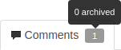 the Comments tab to view any comments added to the job, or to add a comment. Adding a comment sends a notification. The Comments tab display the number of open comments associated with the job. If you hover your mouse over the comment count, a tooltip is displayed showing how many comments are archived.
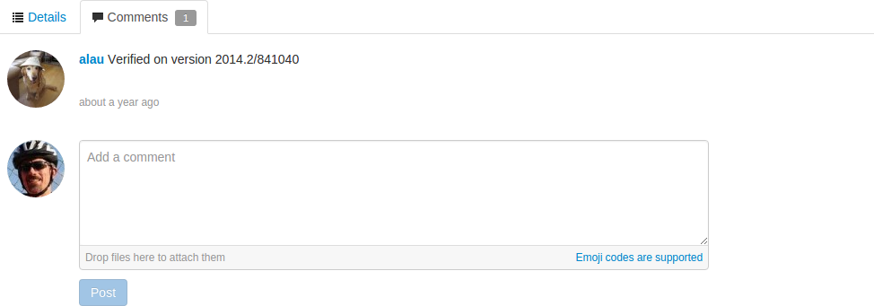
Tip
For more information on customizing job specifications, see: Perforce System Administrator's Guide: Job Specifications
Note
The default Perforce job specification contains very few fields. Adding fields to record additional information, such as the modification time and userid, reporting time and userid, can assist Swarm use appropriate terminology when describing the current disposition of a job.
Adding jobs
Swarm does not provide the ability to create new jobs in the Helix Versioning Engine, but jobs can be added to changelists or reviews:
-
Navigate to a changelist or review.
-
Click the
Add Joblink. -
Scroll through the available jobs, or enter job search criteria to search available jobs.
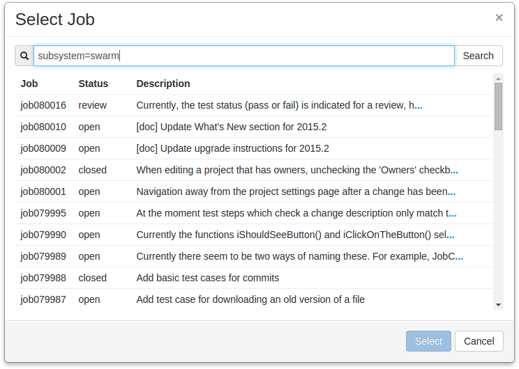
Tip
For more information on job search criteria, see Perforce User's Guide: Jobs.
-
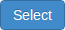 If you find the job you want to add, click its row to highlight it and then click . Or, double-click the desired job to add it.
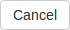 If you do not find the appropriate job, click .
Note
If you attempt to add a job to a review that affects a single project, Swarm applies the project's job view filter to display only jobs that affect the project. It is not currently possible to expand the filter to include jobs outside of the project.
Unlinking jobs
Swarm does not provide the ability to delete jobs from the Helix Versioning Engine, but jobs can be unlinked from changelists or reviews:
-
Navigate to a changelist or review that has an associated job.
-
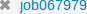 Click the button beside the job.
-
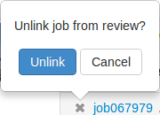 A confirmation tooltip appears. Click in the tooltip to unlink the job.